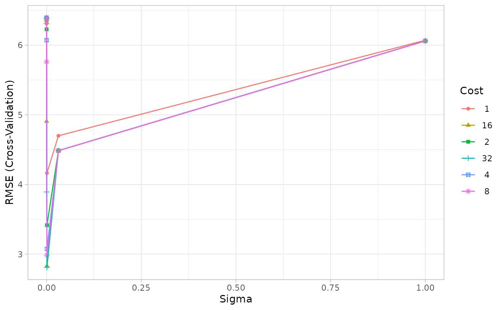

model_selection.RmdWORK IN PROGRESS
# BFS Nummern ausgewählter Gemeinden bfs_nrs <- c(6,7,10,11,12,87,219,294 ,181,38,60,92,119,182,218) Sys.setenv(https_proxy="") # Beziehe historische Daten results <- swissdd::get_nationalvotes(from_date="2015-03-01", to_date="2020-11-29") # Formattiere historische Daten um : eine Spalte je Vorlage testdata <- results %>% filter(canton_id==1) %>% mutate(id=paste0("v",id)) %>% dplyr::select(jaStimmenInProzent, id, mun_id, mun_name) %>% pivot_wider(names_from=id, values_from = jaStimmenInProzent) %>% drop_na() traind <- testdata %>% mutate_at(vars(v6360),# vars(v6360,v6370), ~ifelse(mun_id %in% bfs_nrs,., NA)) %>% drop_na() svmGrid <- expand.grid(sigma= 2^c(-25, -20, -15,-10, -5, 0), C= 2^c(0:5)) svm_mod <- train( v6360 ~ ., data = traind %>% dplyr::select(-mun_id,-mun_name), method = "svmRadial", trControl = trainControl(method = "cv", number = 10), tuneGrid = svmGrid, tuneLength = 10 ) svm_mod #> Support Vector Machines with Radial Basis Function Kernel #> #> 15 samples #> 47 predictors #> #> No pre-processing #> Resampling: Cross-Validated (10 fold) #> Summary of sample sizes: 14, 14, 14, 14, 13, 14, ... #> Resampling results across tuning parameters: #> #> sigma C RMSE Rsquared MAE #> 2.980232e-08 1 6.393836 1 5.968217 #> 2.980232e-08 2 6.393753 1 5.968140 #> 2.980232e-08 4 6.393587 1 5.967986 #> 2.980232e-08 8 6.393255 1 5.967678 #> 2.980232e-08 16 6.392593 1 5.967061 #> 2.980232e-08 32 6.391267 1 5.965828 #> 9.536743e-07 1 6.391270 1 5.965831 #> 9.536743e-07 2 6.388622 1 5.963368 #> 9.536743e-07 4 6.383325 1 5.958442 #> 9.536743e-07 8 6.372732 1 5.948589 #> 9.536743e-07 16 6.351548 1 5.928884 #> 9.536743e-07 32 6.309188 1 5.889474 #> 3.051758e-05 1 6.309632 1 5.889885 #> 3.051758e-05 2 6.227444 1 5.813531 #> 3.051758e-05 4 6.071474 1 5.669598 #> 3.051758e-05 8 5.760187 1 5.381903 #> 3.051758e-05 16 4.906342 1 4.569502 #> 3.051758e-05 32 3.892744 1 3.620538 #> 9.765625e-04 1 4.163355 1 3.874058 #> 9.765625e-04 2 3.415549 1 3.150976 #> 9.765625e-04 4 3.075497 1 2.865524 #> 9.765625e-04 8 2.983931 1 2.834167 #> 9.765625e-04 16 2.831801 1 2.749905 #> 9.765625e-04 32 2.809512 1 2.734952 #> 3.125000e-02 1 4.699043 1 4.292486 #> 3.125000e-02 2 4.485237 1 4.094815 #> 3.125000e-02 4 4.485237 1 4.094815 #> 3.125000e-02 8 4.485237 1 4.094815 #> 3.125000e-02 16 4.485237 1 4.094815 #> 3.125000e-02 32 4.485237 1 4.094815 #> 1.000000e+00 1 6.070497 1 5.610907 #> 1.000000e+00 2 6.060832 1 5.582384 #> 1.000000e+00 4 6.060832 1 5.582384 #> 1.000000e+00 8 6.060832 1 5.582384 #> 1.000000e+00 16 6.060832 1 5.582384 #> 1.000000e+00 32 6.060832 1 5.582384 #> #> RMSE was used to select the optimal model using the smallest value. #> The final values used for the model were sigma = 0.0009765625 and C = 32. svm_mod$results #> sigma C RMSE Rsquared MAE RMSESD RsquaredSD MAESD #> 1 2.980232e-08 1 6.393836 1 5.968217 3.087789 0 2.8724230 #> 2 2.980232e-08 2 6.393753 1 5.968140 3.087746 0 2.8723831 #> 3 2.980232e-08 4 6.393587 1 5.967986 3.087661 0 2.8723032 #> 4 2.980232e-08 8 6.393255 1 5.967678 3.087490 0 2.8721436 #> 5 2.980232e-08 16 6.392593 1 5.967061 3.087149 0 2.8718242 #> 6 2.980232e-08 32 6.391267 1 5.965828 3.086466 0 2.8711856 #> 7 9.536743e-07 1 6.391270 1 5.965831 3.086462 0 2.8711829 #> 8 9.536743e-07 2 6.388622 1 5.963368 3.085093 0 2.8699033 #> 9 9.536743e-07 4 6.383325 1 5.958442 3.082357 0 2.8673450 #> 10 9.536743e-07 8 6.372732 1 5.948589 3.076888 0 2.8622325 #> 11 9.536743e-07 16 6.351548 1 5.928884 3.065973 0 2.8520244 #> 12 9.536743e-07 32 6.309188 1 5.889474 3.044224 0 2.8316761 #> 13 3.051758e-05 1 6.309632 1 5.889885 3.044635 0 2.8320905 #> 14 3.051758e-05 2 6.227444 1 5.813531 2.999743 0 2.7901176 #> 15 3.051758e-05 4 6.071474 1 5.669598 2.920783 0 2.7176308 #> 16 3.051758e-05 8 5.760187 1 5.381903 2.768174 0 2.5764483 #> 17 3.051758e-05 16 4.906342 1 4.569502 2.581176 0 2.3774657 #> 18 3.051758e-05 32 3.892744 1 3.620538 2.264852 0 2.0929209 #> 19 9.765625e-04 1 4.163355 1 3.874058 2.464065 0 2.2892161 #> 20 9.765625e-04 2 3.415549 1 3.150976 2.096561 0 1.9238286 #> 21 9.765625e-04 4 3.075497 1 2.865524 1.194823 0 1.0981041 #> 22 9.765625e-04 8 2.983931 1 2.834167 1.000243 0 0.8764423 #> 23 9.765625e-04 16 2.831801 1 2.749905 1.106848 0 1.0520485 #> 24 9.765625e-04 32 2.809512 1 2.734952 1.338855 0 1.3139034 #> 25 3.125000e-02 1 4.699043 1 4.292486 3.907319 0 3.7574294 #> 26 3.125000e-02 2 4.485237 1 4.094815 3.943189 0 3.7768276 #> 27 3.125000e-02 4 4.485237 1 4.094815 3.943189 0 3.7768276 #> 28 3.125000e-02 8 4.485237 1 4.094815 3.943189 0 3.7768276 #> 29 3.125000e-02 16 4.485237 1 4.094815 3.943189 0 3.7768276 #> 30 3.125000e-02 32 4.485237 1 4.094815 3.943189 0 3.7768276 #> 31 1.000000e+00 1 6.070497 1 5.610907 3.184582 0 2.9961279 #> 32 1.000000e+00 2 6.060832 1 5.582384 3.266527 0 3.1192765 #> 33 1.000000e+00 4 6.060832 1 5.582384 3.266527 0 3.1192765 #> 34 1.000000e+00 8 6.060832 1 5.582384 3.266527 0 3.1192765 #> 35 1.000000e+00 16 6.060832 1 5.582384 3.266527 0 3.1192765 #> 36 1.000000e+00 32 6.060832 1 5.582384 3.266527 0 3.1192765 ggplot(svm_mod) + theme_light()

testdata$newpred <- predict(svm_mod, testdata) testdata %>% select(mun_id,mun_name, v6360,newpred) #> # A tibble: 163 x 4 #> mun_id mun_name v6360 newpred #> <chr> <chr> <dbl> <dbl> #> 1 1 Aeugst am Albis 48.8 49.9 #> 2 2 Affoltern am Albis 49.1 50.6 #> 3 3 Bonstetten 52.2 49.4 #> 4 4 Hausen am Albis 50.4 51.0 #> 5 5 Hedingen 52.5 51.8 #> 6 6 Kappel am Albis 45.5 46.1 #> 7 7 Knonau 48.2 48.3 #> 8 8 Maschwanden 51.9 48.4 #> 9 9 Mettmenstetten 46.9 49.6 #> 10 10 Obfelden 49.5 48.8 #> # … with 153 more rows
Das Tuning-Grid kann den Funktionen des plausi-packages ebenfalls übergeben werden.
# works predict_single_vote("v6360", traindata=traind, testdata=testdata, method="svmRadial", geovars=c("mun_id","mun_name" ), tuneGrid=svmGrid, tuneLength = 10) #> # A tibble: 163 x 5 #> mun_id mun_name pred real vorlage #> <chr> <chr> <dbl> <dbl> <chr> #> 1 1 Aeugst am Albis 49.9 48.8 v6360 #> 2 2 Affoltern am Albis 50.6 49.1 v6360 #> 3 3 Bonstetten 49.4 52.2 v6360 #> 4 4 Hausen am Albis 51.0 50.4 v6360 #> 5 5 Hedingen 51.8 52.5 v6360 #> 6 6 Kappel am Albis 46.1 45.5 v6360 #> 7 7 Knonau 48.3 48.2 v6360 #> 8 8 Maschwanden 48.4 51.9 v6360 #> 9 9 Mettmenstetten 49.6 46.9 v6360 #> 10 10 Obfelden 48.8 49.5 v6360 #> # … with 153 more rows # not working yet as dots are not passed as intended predict_votes(votes=c("v6360"), train=traind, test=testdata, method="svmRadial", geovars=c("mun_id","mun_name"), tuneGrid=svmGrid, tuneLength = 10) #> # A tibble: 163 x 5 #> mun_id mun_name pred real vorlage #> <chr> <chr> <dbl> <dbl> <chr> #> 1 1 Aeugst am Albis 50.2 48.8 v6360 #> 2 2 Affoltern am Albis 50.4 49.1 v6360 #> 3 3 Bonstetten 46.3 52.2 v6360 #> 4 4 Hausen am Albis 51.4 50.4 v6360 #> 5 5 Hedingen 49.9 52.5 v6360 #> 6 6 Kappel am Albis 46.1 45.5 v6360 #> 7 7 Knonau 48.8 48.2 v6360 #> 8 8 Maschwanden 47.6 51.9 v6360 #> 9 9 Mettmenstetten 49.7 46.9 v6360 #> 10 10 Obfelden 48.8 49.5 v6360 #> # … with 153 more rows